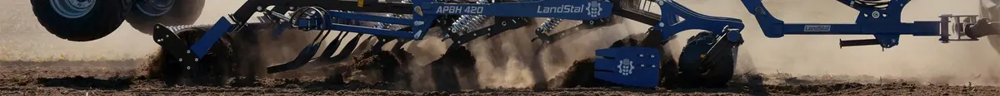

Bezorebné zpracování půdy
Skimmer APB a APBH
Řada bezorebných agregátů Landstal pro mělké zpracování strniště, intenzivní mísení rostlinných zbytků i hlubší kypření až do 30 cm. Konkrétní verzi vybíráme podle výkonu traktoru, půdy a pracovního postupu.
2,5–6,0 mhloubka až 30 cm80–700 k

Kompaktní řady
APB, APB Plus a APB LP
Řešení pro různé záběry, výkon traktoru a požadovanou intenzitu mísení.
| Řada / model | Záběr | Hmotnost* | Slupice | Disky | Výkon traktoru | Výkonnost |
|---|---|---|---|---|---|---|
| APB 250 | 2,5 m | 1 700 kg | 8 | 6 | 100–150 k | 1,8–2,2 ha/h |
| APB 300 | 3,0 m | 1 900 kg | 10 | 8 | 120–170 k | 2,1–3,0 ha/h |
| APB 350 | 3,5 m | 2 300 kg | 12 | 9 | 150–200 k | 2,8–4,0 ha/h |
| APB 420 | 4,2 m | 3 500 kg | 14 | 10 | 180–200 k | 3,0–4,2 ha/h |
| APB 300 Plus | 3,0 m | 2 800 kg | 10 | 8 | 120–170 k | 2,1–3,0 ha/h |
| APB LP 250 | 2,5 m | 1 500 kg | 7 | — | 80–150 k | 1,8–2,2 ha/h |
| APB LP 300 | 3,0 m | 1 600 / 1 700 kg | 7 / 9 | — | 100–150 / 110–150 k | 2,1–3,0 ha/h |
Všechny uvedené verze pracují do hloubky 30 cm. * Hmotnost je orientační a závisí na výbavě.
Výkonné verze
APBH a APBH Pro
Řady se čtyřmi řadami slupic pro intenzivní bezorebné zpracování a vyšší výkony.
| Řada / model | Záběr | Hmotnost* | Slupice | Výkon traktoru | Výkonnost | Max. hloubka |
|---|---|---|---|---|---|---|
| APBH 420 | 4,2 m | 4 800 kg | 15 | 200–300 k | 3,0–4,2 ha/h | 30 cm |
| APBH 540 | 5,4 m | 5 800 kg | 19 | 260–400 k | 3,8–5,0 ha/h | 30 cm |
| APBH 300 Pro | 3,0 m | 4 400 kg | 10 | 240–350 k | 2,1–3,0 ha/h | 30 cm |
| APBH 420 Pro | 4,2 m | 7 000 kg | 15 | 320–450 k | 3,0–4,2 ha/h | 30 cm |
| APBH 540 Pro | 5,4 m | 7 600 kg | 19 | 420–600 k | 3,8–5,0 ha/h | 30 cm |
| APBH 600 Pro | 6,0 m | 7 900 kg | 21 | 480–700 k | 4,2–5,5 ha/h | 30 cm |
* Hmotnost je orientační a závisí na výbavě a konfiguraci.
Konstrukce a standard
Vybavení řady Skimmer
- Slupice 60 × 25 mm typu Delta nebo Terra, podle verze demontovatelné
- Pružinové jištění Non-Stop nebo střižné jištění
- Pružinové hrablo a hydraulické nastavení pracovní hloubky
- APB LP: krátká kompaktní konstrukce a možnost práce jen s dláty
- APBH: čtyři řady slupic, sklopný rám a transportní systém
- APBH Pro: přední dvojice řad disků Ø 510 mm s bezúdržbovými náboji


Konfigurace pro české podmínky
Vybereme správný Skimmer
Pošlete nám výkon traktoru, typ půdy, požadovanou hloubku a výměru. Doporučíme řadu, záběr, jištění i vhodný zadní válec.